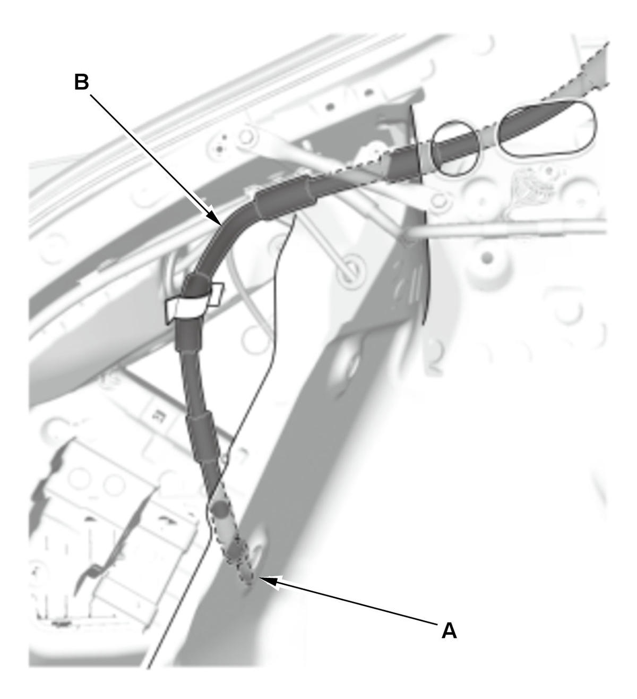
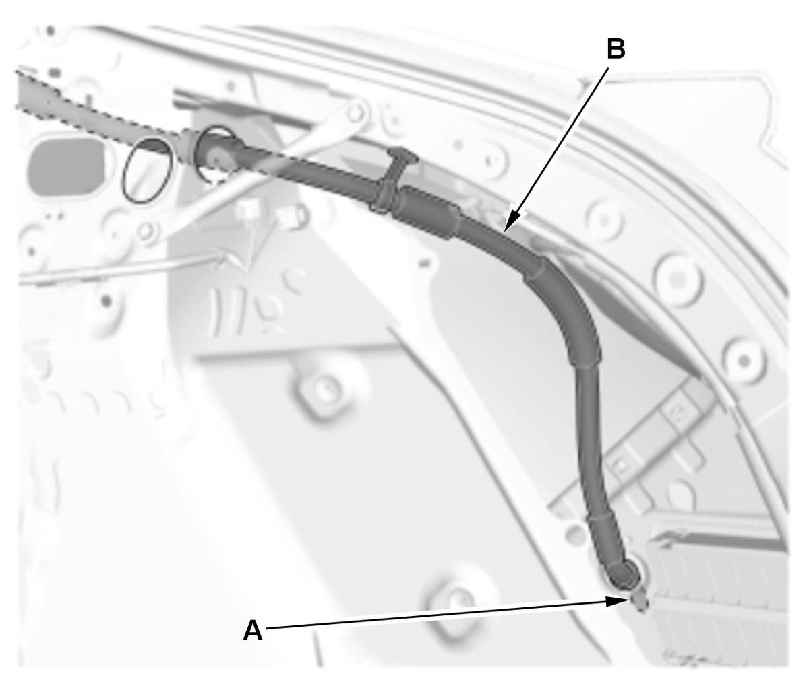
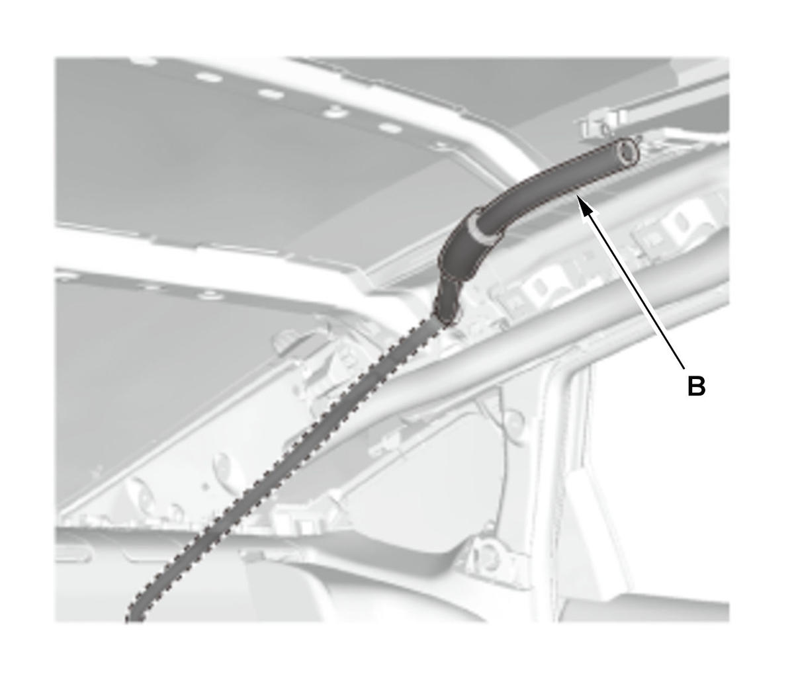
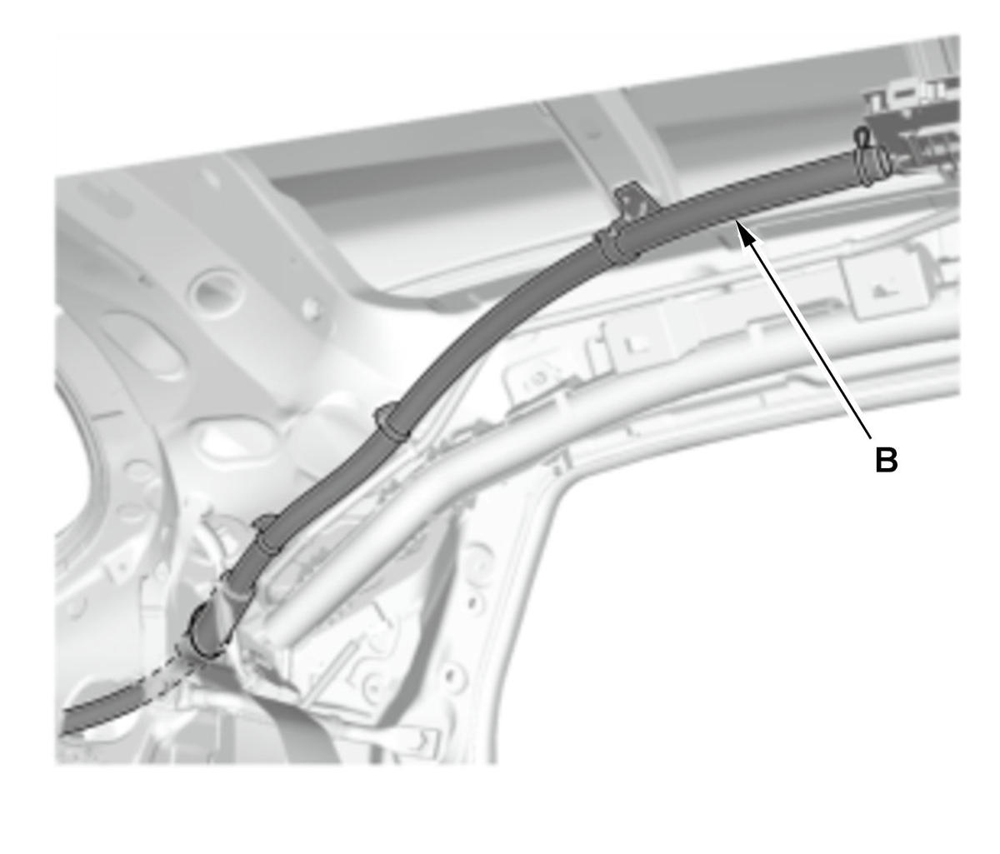

Removal and Installation
NOTE:
- How to read the torque specifications .
- SRS components are located in this area. Review the SRS component locations and the precautions and procedures before doing repairs or service.
- Before installing the frame, clear the drain tubes and the drain valves using compressed air.
- To install a new drain tube, tie the string left in the body during drain tube removal to the top end of the new drain tube, and pull it up into the roof.
- When connecting the drain tubes, slide them over the frame nozzles at least 10 mm (0.39 in).
- Check the frame seal.
- When installing the frame, first attach the rear hook into the body hole.
- Install the tube clips (A) on the drain tubes (B) as shown.

Moonroof Frame
- Headliner - Remove
- Moonroof Frame - Remove
1. Disconnect the front drain tubes (A) and the rear drain tubes (B). 2. Remove the moonroof frame (A). - Frame Seal - Remove
- All Removed Parts - Install
1. Install the parts in the reverse order of removal.
NOTE: Clean the frame surfaces where the frame seals are applied with a shop towel dampened with isopropyl alcohol. After cleaning, keep oil, grease, and water from getting on the surface. - Moonroof Glass Position - Adjust

Front Drain Tube
- Headliner - Remove
- Cowl Cover - Remove (Left Front Drain Tube)
- Passenger's Dashboard Undercover - Remove (Right Front Drain Tube)
- Passenger's Kick Panel - Remove (Right Front Drain Tube)
- Front Drain Tube - Remove
A-Pillar Area 1. Pull the front drain valve (A) out of the body hole. 2. Tie a string to the top end of the front drain tube (B), then pull the drain tube down out of the pillar. Leave the string in the pillar to use when reinstalling the drain tube.
- All Removed Parts - Install
1. Install the parts in the reverse order of removal. - Water Leaks - Check

Rear Drain Tube
- Headliner - Remove
- Trunk Rear Side Trim Panel - Remove
- Rear Drain Tube - Remove
Trunk Rear Side Area (4-door) 




Courtesy of HONDA, U.S.A., INC.HONDA, U.S.A., INC.HONDA, U.S.A., INC.HONDA, U.S.A., INC.HONDA, U.S.A., INC.Cargo Rear Side Area (5-door, Left Side)
Courtesy of HONDA, U.S.A., INC.HONDA, U.S.A., INC.HONDA, U.S.A., INC.HONDA, U.S.A., INC.HONDA, U.S.A., INC.Cargo Rear Side Area (5-door, Right Side)
Courtesy of HONDA, U.S.A., INC.HONDA, U.S.A., INC.HONDA, U.S.A., INC.HONDA, U.S.A., INC.HONDA, U.S.A., INC.C-Pillar Area (4-door)
Courtesy of HONDA, U.S.A., INC.HONDA, U.S.A., INC.HONDA, U.S.A., INC.HONDA, U.S.A., INC.HONDA, U.S.A., INC.C-Pillar Area (5-door)
1. Pull the rear drain valve (A) out of the body hole. 2. Tie a string to the top end of the rear drain tube (B), then pull the drain tube down out of the pillar. Leave the string in the pillar to use when reinstalling the drain tube.
- All Removed Parts - Install
1. Install the parts in the reverse order of removal. - Water Leaks - Check